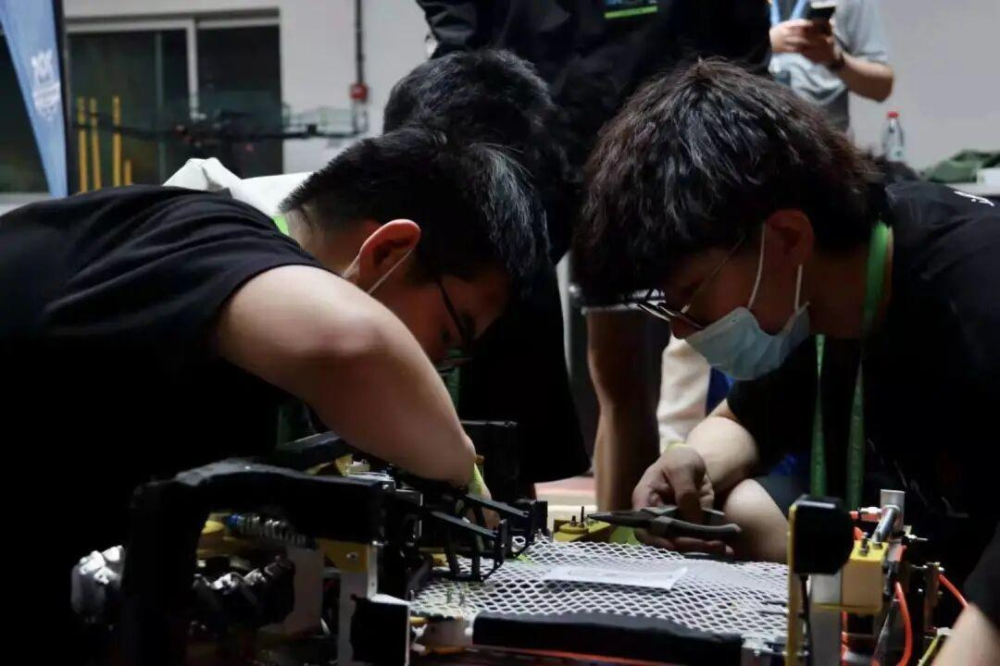

工程之路，机甲之旅
“可可爱爱奇奇怪怪
睫毛乖子龙”传记
他为RM付出了很多

本是年级前五却放弃奖学金选择了机器人
加入战队前后的变化
机甲大赛推荐篇
他不仅是战队技术部的一员还是一名工程机器人的操作手。在最近的机甲大赛比赛中他操作的工程机器人为其他机器人提供了坚强的后盾。作为随时都在自我反省，自我总结的人在这次的机甲大赛中面对有着严明的战术配合和极强的机器人性能的哈工大，他勇于承认自己的不足，指出自己战队与强队的差距以及我方存在的问题，并对自己和战队里的其他成员说：“要勤加思考，及时改正，减小与强队之间的差距。”
——北部分赛区篇
听听“他”怎么说
Listen carefully

初次接触机器人是在高中，第一次他作为学弟参加比赛，他回忆道“当时心里只想着玩没有什么压力”那次他拿到自己第一个全国冠军
又是一年还是RoboCup，参赛的还有他，但是他不再只是之前那个抱着试一试心态的学弟，而是一个领队的学长，他说“那一年他的压力很大，是责任”那年他带领队伍再次获得了全国的冠军。
听听其他人怎么说
对于子龙来说通宵是常态，队长经常检查进度，他为了和队长表决心，买了一排红牛，还指给队长看说：“鹏哥，我的决心都在这儿了，看到没。”说实在的子龙真的是个很搞笑的人。@孙慧
子龙熟了之后是一个很有趣也很闷骚的人，而且很有激情，再多的就不能透露了，因为一猜就知道是我说的，毕竟保命要紧足以看出他的“狂暴” @温龙
队友的备注足以说明一切！！！！
不念过去，不畏将来是他一直以来的座右铭，他希望自己能够进入大疆，成为一名工程师，在机器人的道路上越走越远，小编也希望未来的他能实现梦想。

排版：杜岑
图片：信息部